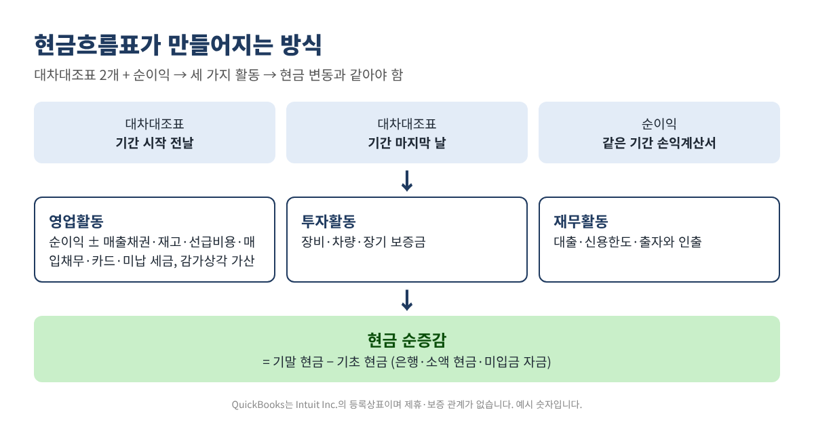
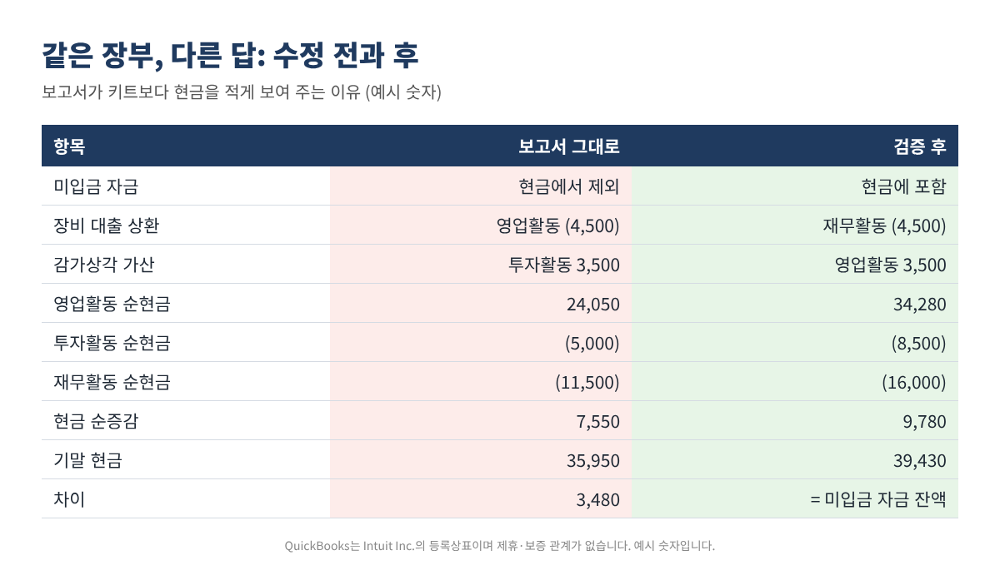
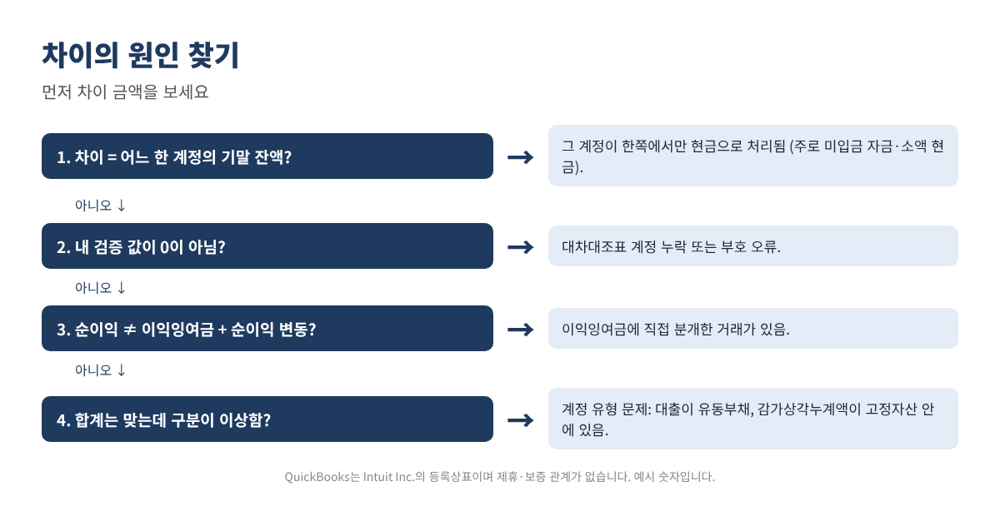

현금흐름표 기말 현금이 은행 잔액과 안 맞을 때: 원인 찾기와 직접 맞추는 법
현금흐름표(Statement of Cash Flows)를 뽑았더니 Cash at end of period가 은행 잔액이나 대차대조표의 현금과 다릅니다. 또는 합계는 맞는데 대출 상환이 영업활동에, 감가상각이 투자활동에 들어가 있습니다. QuickBooks 커뮤니티에서 계속 올라오는 질문인데, 많은 글이 깔끔한 해결 없이 임시방편으로 끝납니다. 은행 대출 신청이나 동업자 보고, 세무 신고 준비에 재무제표를 내야 한다면 현금흐름표가 맞지 않는 것만으로 서류 전체의 신뢰가 떨어집니다.
다행히 현금흐름표는 순수한 계산입니다. 대차대조표가 맞다면 현금흐름표는 반드시 1센트까지 맞습니다. 이 글에서는 대차대조표 2개와 손익계산서 1개로 직접 다시 만드는 방법, 그리고 차이가 날 때 정확한 원인을 찾는 방법을 순서대로 설명합니다.
1단계: 보고서가 실제로 하는 일 이해하기
간접법 현금흐름표는 순이익에서 출발해, 변동이 생긴 대차대조표 계정을 하나씩 반영합니다. 현금 계정 자체는 목록에 없습니다. 현금이 바로 '답'이기 때문입니다.

직접 만들 때 가장 많이 틀리는 부분이 부호입니다. 현금이 아닌 자산이 늘면 현금은 줄어듭니다(돈을 썼거나 아직 못 받았기 때문). 부채나 자본이 늘면 현금은 늘어납니다(빌렸거나 누군가 돈을 넣었기 때문).
2단계: 보고서 3개 뽑기
QuickBooks Desktop
- Reports > Company & Financial > Balance Sheet Standard, 날짜는 기간 시작 전날(1월 1일–10월 31일이라면 작년 12월 31일).
- 같은 보고서를 기간 마지막 날 기준으로 한 번 더.
- Reports > Company & Financial > Profit & Loss Standard로 같은 기간 순이익 확인.
- 선택: 비교용으로 Reports > Company & Financial > Statement of Cash Flows를 같은 기간으로 실행.
QuickBooks Online
인튜이트 공식 도움말 기준 경로는 이렇습니다. 왼쪽 Reports → Standard reports → 검색창에 보고서 이름 입력 후 열기 → Customize에서 기간 변경. 같은 방법으로 Balance Sheet(두 날짜로 두 번)와 Profit and Loss를 실행해 엑셀로 내보내세요. 같은 도움말에 따르면 Online의 현금흐름표는 발생주의(accrual)로만 실행됩니다. Desktop만 써 오신 분이라면, Online은 메뉴가 왼쪽 세로 막대에 있고 보고서를 이름으로 검색하는 방식이라는 점만 기억하시면 됩니다.
3단계: 잔액을 표로 정리하고 수식 넣기
엑셀이나 구글 시트에 대차대조표 계정을 한 줄씩 적습니다. A열 계정 이름, B열 유형, C열 기초 잔액, D열 기말 잔액. 금액은 보고서에 보이는 그대로 입력합니다. 부채·자본은 양수, 감가상각누계액과 대표 인출은 음수입니다.
| 계정 (예시 숫자) | 유형 | 2025.12.31 | 2026.10.31 | 변동 | 현금 영향 |
|---|---|---|---|---|---|
| 사업용 당좌 | 은행(현금) | 18,400 | 23,950 | 5,550 | — |
| 미입금 자금 | 현금 | 1,250 | 3,480 | 2,230 | — |
| 매출채권 | 자산 | 6,200 | 8,900 | 2,700 | (2,700) |
| 장비 | 고정자산 | 42,000 | 50,500 | 8,500 | (8,500) |
| 감가상각누계액 | 차감 자산 | (12,600) | (16,100) | (3,500) | 3,500 |
| 사업용 신용카드 | 부채 | 2,850 | 4,120 | 1,270 | 1,270 |
| 장비 대출 | 부채 | 28,000 | 23,500 | (4,500) | (4,500) |
| 대표 인출 | 자본 | 0 | (14,000) | (14,000) | (14,000) |
- 변동:
=D2-C2 - 현금 영향:
=IF(B2="Asset",-(D2-C2),D2-C2)(현금 계정은 비워 둠, 유형은 영어로 Asset 입력) - 활동별 합계: F열에 Operating·Investing·Financing을 적고
=SUMIF(F:F,"Operating",E:E) - 현금 순증감:
=순이익+영업+투자+재무 - 검증:
=기말현금-기초현금-순증감이 0이어야 함
이익잉여금(Retained Earnings)과 순이익(Net Income) 줄은 함께 봅니다. 두 줄을 합친 변동이 기간 순이익과 같아야 합니다. 다르다면 누군가 이익잉여금에 직접 분개한 것이고, 회계사가 검토하기 전까지 그 금액은 재무활동에 둡니다.
| 구분 (예시, 2026.1.1 – 10.31) | 금액 |
|---|---|
| 순이익 | 32,850 |
| 영업활동 조정 (매출채권·재고·선급·감가상각·매입채무·카드·미납 세금) | 1,430 |
| 영업활동 순현금 | 34,280 |
| 투자활동 순현금 (장비) | (8,500) |
| 재무활동 순현금 (신용한도·대출·대표 인출) | (16,000) |
| 현금 순증감 | 9,780 |
| 기초 현금 (29,650) + 증감 | 39,430 |
| 기말 대차대조표의 현금 (23,950 + 12,000 + 3,480) | 39,430 ✓ |
4단계: 내 계산과 보고서가 다를 때

먼저 차이 금액을 보세요. 어느 한 계정의 기말 잔액과 정확히 같다면, 그 계정이 한쪽에서만 현금으로 처리되고 있는 것입니다. 주로 미입금 자금(Undeposited Funds)이나 소액 현금입니다. 내 검증 자체가 0이 아니라면 대차대조표 계정이 빠졌거나 부호가 틀린 것입니다.

QuickBooks 안에서 구분 바로잡기
Desktop: Edit > Preferences > Reports & Graphs > Company Preferences 탭, Statement of Cash Flows 아래 Classify 버튼에서 대차대조표 계정마다 Operating·Investing·Financing을 지정합니다(관리자만 가능). Online: QuickBooks 커뮤니티에서 인튜이트 진행자가 Online에는 이 보고서의 재분류 기능이 없다고 답했습니다. 구분은 계정 유형을 따르므로, 장기 대출이 Other Current Liability로 되어 있다면 회계사와 계정 유형을 검토하거나 직접 만든 현금흐름표를 제출하세요.
자주 하는 실수
- 기초 대차대조표를 기간 첫날로 뽑는 것 (전날이어야 함).
- 기초나 기말 잔액이 0인 계정을 빠뜨리는 것 (새 대출, 닫은 계좌).
- 부호 실수: 부채를 음수로, 감가상각누계액을 양수로 입력.
- 발생주의 현금흐름표를 현금주의 대차대조표·손익계산서와 비교.
- 클래스·지점 필터를 건 채 실행 (대차대조표 계정에는 클래스가 없는 경우가 많음).
- 미입금 자금을 빼먹어서 기말 현금이 정확히 그 금액만큼 모자라 보이는 경우.
자주 묻는 질문
미입금 자금(Undeposited Funds)은 현금인가요?
받았지만 아직 은행에 넣지 않은 돈이라 대부분 현금으로 봅니다. 어느 쪽이든 일관되게 처리하고, 정기적으로 입금 처리해 잔액을 비워 두면 이 문제 자체가 사라집니다.
왜 감가상각이 투자활동에 나오나요?
감가상각누계액이 고정자산 그룹 안에 있으면 보고서가 그 변동을 자산 구입처럼 처리합니다. 간접법에서 감가상각은 현금이 나가지 않는 비용이므로 영업활동에서 더해 줍니다.
Online 보고서 자체를 고칠 수 있나요?
커뮤니티의 인튜이트 답변 기준으로 구분 위치는 바꿀 수 없습니다. 틀린 계정 유형을 바로잡거나, 위 방법으로 스프레드시트에서 다시 만드는 것이 현실적인 방법입니다.
이익이 났는데 현금은 줄었습니다. 잘못된 건가요?
아닙니다. 이익이 매출채권이나 재고에 묶여 있거나, 장비 구입·대출 상환·대표 인출에 쓰였을 수 있습니다. 세 가지 활동이 돈이 어디로 갔는지 보여 줍니다.
체크리스트
- 기간 말까지 모든 은행·카드 계정 대조(reconcile).
- 미입금 자금 입금 처리 또는 정리.
- 기간 시작 전날과 마지막 날 대차대조표 실행.
- 같은 기간·같은 기준으로 손익계산서 실행.
- 대차대조표 계정 모두 입력, 검증 값 0 확인.
- 대출은 재무활동, 장비는 투자활동, 감가상각은 영업활동에서 가산.
- 순이익 = 이익잉여금 + 순이익 줄의 변동.
- 대출로 산 자산 같은 비현금 거래 메모.
위 과정을 그대로 해 주는 현금흐름표 검증 키트 2026은 아래 무료 키트 다운로드에서 가입 없이 무료로 받으실 수 있습니다(엑셀 + PDF 가이드).
이 글은 교육용 정보이며 세무·법률·회계 자문이 아닙니다. 모든 숫자는 예시입니다. 메뉴 경로는 2026년 11월 인튜이트 도움말 기준이며 바뀔 수 있습니다. QuickBooks는 Intuit Inc.의 등록상표이며, 이 글은 Intuit와 제휴·보증 관계가 없습니다. (QuickBooks is a registered trademark of Intuit Inc.; not affiliated with or endorsed by Intuit.)
출처
- Intuit: How to run a Statement of Cash Flows (QuickBooks Online)
- Intuit: Set report preferences (QuickBooks Desktop)
- QuickBooks Community: Statement of cash flows classification (Online)
- QuickBooks Community: Ending cash on cash flow report does not match ending cash on balance sheet
- QuickBooks Community: Undeposited funds and statement of cash flow
- QuickBooks Community: Statement of cash flows shows non-cash transactions
무료 키트 다운로드
글에서 설명한 내용을 그대로 따라 할 수 있는 도구입니다. 가입 없이 바로 받으세요.
- Excel 계산 도구 (.xlsx)Cash_Flow_Statement_TieOut_Kit_2026_EN_KR.xlsx · 33 KB
- 단계별 가이드 (PDF)Cash_Flow_TieOut_Guide_2026_EN_KR.pdf · 429 KB
본인과 본인 사업에 무료로 쓰세요. 재판매·재배포는 하지 마세요. 일반 정보이며 세무·법률·회계 자문이 아닙니다. 숫자는 본인 자료로 꼭 확인하세요. QuickBooks는 Intuit Inc.의 상표이며 BIZLEX는 Intuit과 관련이 없습니다.